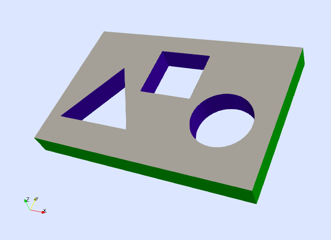
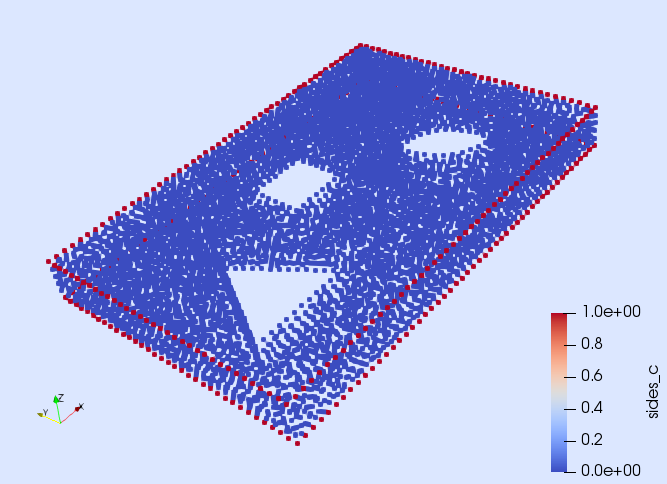
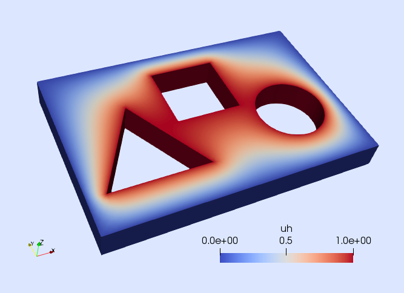

Problem statement
The goal of this tutorial is to solve a nonlinear PDE in Gridap. For the sake of simplicity, we consider the $p$-Laplacian equation as the model problem. Specifically, the PDE we want to solve is: find the scalar-field $u$ such that
\[\left\lbrace \begin{aligned} -\nabla \cdot \left( |\nabla u|^{p-2} \ \nabla u \right) = f\ &\text{ in }\ \Omega,\\ u = 0 \ &\text{ on } \ \Gamma_0,\\ u = g \ &\text{ on } \ \Gamma_g,\\ n \cdot \left( |\nabla u|^{p-2}\ \nabla u \right)= 0 \ &\text{ on } \ \Gamma_{\rm N}, \end{aligned} \right.\]
with $p>2$. The computational domain $\Omega$ is the one depicted in next figure. We want to solve the Poisson equation on the 3D domain depicted in next figure with Dirichlet and Neumann boundary conditions. We impose homogeneous Dirichlet and homogeneous Neumann boundary conditions on $\Gamma_0$ and $\Gamma_{\rm N}$ respectively, and inhomogeneous Dirichlet conditions on $\Gamma_g$. The Dirichlet boundaries $\Gamma_0$ and $\Gamma_g$ are defined as the closure of the green and blue surfaces in next figure respectively, whereas the Neumann boundary is $\Gamma_{\rm N}\doteq\partial\Omega \setminus (\Gamma_0\cup\Gamma_g)$. In this example, we consider the values $p=3$, $f=1$, and $g=2$.

Numerical scheme
We discretize the problem with conforming Lagrangian FE spaces. For this formulation, the nonlinear weak form reads: find $u\in U_g$ such that $[r(u)](v) = 0$ for all $v\in V_0$. As in previous tutorials, the space $U_g$ is the set of functions in $H^1(\Omega)$ that fulfill the Dirichlet boundary conditions, whereas $V_0$ is composed by functions in $H^1(\Omega)$ that vanish at the Dirichlet boundary. The weak residual $r(u)$ evaluated at a function $u\in U_g$ is the linear form defined as
\[[r(u)](v) \doteq \int_\Omega \nabla v \cdot \left( |\nabla u|^{p-2}\ \nabla u \right) \ {\rm d}\Omega - \int_\Omega v\ f \ {\rm d}\Omega.\]
In order to solve this nonlinear weak equation, we consider a Newton-Raphson method, which is associated with a linearization of the problem in an arbitrary direction $\delta u\in V_0$, namely $[r(u+\delta u)](v)\approx [r(u)](v) + [j(u)](\delta u,v)$. In previous formula, $j(u)$ is the Jacobian evaluated at $u\in U_g$, which is the bilinear form
\[[j(u)](\delta u,v) = \int_\Omega \nabla v \cdot \left( |\nabla u|^{p-2}\ \nabla \delta u \right) \ {\rm d}\Omega + (p-2) \int_\Omega \nabla v \cdot \left( |\nabla u|^{p-4} (\nabla u \cdot \nabla \delta u) \nabla u \right) \ {\rm d}\Omega.\]
Note that the solution of this nonlinear PDE with a Newton-Raphson method, will require to discretize both the residual $r$ and the Jacobian $j$. In Gridap, this is done by following an approach similar to the one already shown in previous tutorials for discretizing the bilinear and linear forms associated with a linear FE problem. The specific details are discussed now.
Discrete model
As in previous tutorials, the first step to solve the PDE is to load a discretization of the computational domain. In this case, we load the model from the same file as in the first tutorial
using Gridap
using DrWatson
model = DiscreteModelFromFile("meshes/poisson.json")As stated before, we want to impose Dirichlet boundary conditions on $\Gamma_0$ and $\Gamma_g$, but none of these boundaries is identified in the model. E.g., you can easily see by writing the model in vtk format
writevtk(model,"model")and by opening the file "model_0" in ParaView that the boundary identified as "sides" only includes the vertices in the interior of $\Gamma_0$, but here we want to impose Dirichlet boundary conditions in the closure of $\Gamma_0$, i.e., also on the vertices on the contour of $\Gamma_0$. Fortunately, the objects on the contour of $\Gamma_0$ are identified with the tag "sides_c" (see next figure). Thus, the Dirichlet boundary $\Gamma_0$ can be built as the union of the objects identified as "sides" and "sides_c".

Gridap provides a convenient way to create new object identifiers (referred to as "tags") from existing ones. First, we need to extract from the model, the object that holds the information about the boundary identifiers (referred to as FaceLabeling):
labels = get_face_labeling(model)Then, we can add new identifiers (aka "tags") to it. In the next line, we create a new tag called "diri0" as the union of the objects identified as "sides" and "sides_c", which is precisely what we need to represent the closure of the Dirichlet boundary $\Gamma_0$.
add_tag_from_tags!(labels,"diri0",["sides", "sides_c"])We follow the same approach to build a new identifier for the closure of the Dirichlet boundary $\Gamma_g$. In this case, the boundary is expressed as the union of the objects identified with the tags "circle", "circle_c", "triangle", "triangle_c", "square", "square_c". Thus, we create a new tag for $\Gamma_g$, called "dirig" simply as follows:
add_tag_from_tags!(labels,"dirig",
["circle","circle_c", "triangle", "triangle_c", "square", "square_c"])FE Space
Now, we can build the FE space by using the newly defined boundary tags.
reffe = ReferenceFE(lagrangian,Float64,1)
V0 = TestFESpace(model,reffe,conformity=:H1,labels=labels,dirichlet_tags=["diri0", "dirig"])The construction of this space is essentially the same as in the first tutorial (we build a continuous scalar-valued Lagrangian interpolation of first order). However, we also pass here the labels object (that contains the newly created boundary tags). From this FE space, we define the trial FE spaces
g = 1
Ug = TrialFESpace(V0,[0,g])Nonlinear FE problem
At this point, we are ready to build the nonlinear FE problem. To this end, we need to define the weak residual and also its corresponding Jacobian. This is done following a similar procedure to the one considered in previous tutorials to define the bilinear and linear forms associated with linear FE problems. We first need to define the usual objects for numerical integration:
degree=2
Ω = Triangulation(model)
dΩ = Measure(Ω,degree)On the one hand, the weak residual is built as follows
const p = 3
flux(∇u) = norm(∇u)^(p-2) * ∇u
f(x) = 1
res(u,v) = ∫( ∇(v)⊙(flux∘∇(u)) - v*f )*dΩFunction res is the one representing the integrand of the weak residual $[r(u)](v)$. The first argument of function res stands for the function $u\in U_g$, where the residual is evaluated, and the second argument stands for a generic test function $v\in V_0$.
On the other hand, we (optionally) implement a function jac representing the Jacobian.
dflux(∇du,∇u) = (p-2)*norm(∇u)^(p-4)*(∇u⊙∇du)*∇u+norm(∇u)^(p-2)*∇du
jac(u,du,v) = ∫( ∇(v)⊙(dflux∘(∇(du),∇(u))) )*dΩThe first argument of function jac stands for function $u\in U_g$, where the Jacobian is evaluated. The second argument is a test function $v\in V_0$, and the third argument represents an arbitrary direction $\delta u \in V_0$.
We finally construct the nonlinear FE problem
op = FEOperator(res,jac,Ug,V0)Here, we have constructed an instance of FEOperator, which is the type that represents a general nonlinear FE problem in Gridap. The constructor takes the functions representing the weak residual and Jacobian, and the test and trial spaces. If only the function for the residual is provided, the Jacobian is computed internally with automatic differentiation:
op_AD = FEOperator(res,Ug,V0)Nonlinear solver phase
We have already built the nonlinear FE problem. Now, the remaining step is to solve it. In Gridap, nonlinear (and also linear) FE problems can be solved with instances of the type FESolver.
We construct an instance of FESolver as follows:
using LineSearches: BackTracking
nls = NLSolver(
show_trace=true, method=:newton, linesearch=BackTracking())
solver = FESolver(nls)Note that the NLSolver function used above internally calls the nlsolve function of the NLsolve package with the provided key-word arguments. Thus, one can use any of the nonlinear methods available via the function nlsolve to solve the nonlinear FE problem. Here, we have selected a Newton-Raphson method with a back-tracking line-search from the LineSearches package.
We are finally in place to solve the nonlinear FE problem. The initial guess is a FEFunction, which we build from a vector of random (free) nodal values:
import Random
Random.seed!(1234)
x = rand(Float64,num_free_dofs(Ug))
uh0 = FEFunction(Ug,x)
uh, = solve!(uh0,solver,op)We finish this tutorial by writing the computed solution for visualization (see next figure).
writevtk(Ω,datadir("p_laplacian"),cellfields=["uh"=>uh])
This page was generated using Literate.jl.